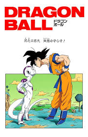

🔥 Dragon Ball Z
A saga que redefiniu o gênero shonen

Dragon Ball Z foi responsável por popularizar os animes shonen em todo o mundo. A série, criada por Akira Toriyama, acompanha as aventuras de Goku e seus amigos em batalhas épicas contra vilões cada vez mais poderosos.
Com estreia em 1989 no Japão e chegando ao Brasil em 1994, DBZ se tornou um fenômeno cultural que moldou toda uma geração de fãs de anime, games e mangás ao redor do mundo.
O anime destacou valores de superação, treinamento e amizade, tornando-se referência absoluta para o gênero shonen até os dias de hoje.
Principais Sagas
- Saga dos Saiyajins
- Chegada de Raditz — irmão de Goku
- Primeira morte de Goku em combate
- Apresentação de Vegeta e Nappa
- Saga de Namekusei
- Batalha pelo Planet Namekusei e as esferas do dragão
- Enfrentamento contra o Freeza
- Primeira transformação Super Saiyajin de Goku
- Saga Cell
- Introdução dos Androides e Cell
- Gohan atinge o Super Saiyajin 2
- Morte de Goku pelo Kame Hame Ha final
- Saga Majin Boo
- Vegeta se sacrifica contra Boo
- Goku usa o Super Saiyajin 3
- Fusão Gogeta / Vegito
🎬 Abertura do Anime
Reviva a abertura clássica de Dragon Ball Z! Uma das sequências mais icônicas do anime que marcou gerações com sua trilha sonora inesquecível.
A música, composta por Kenji Yamamoto, se tornou sinônimo de poder, determinação e as épicas batalhas que definiram o shonen moderno.